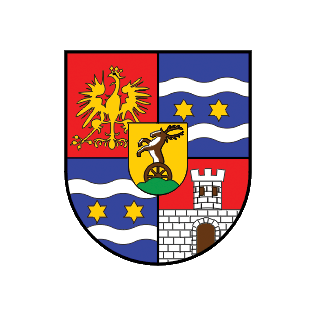
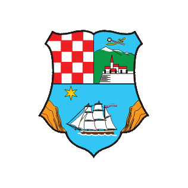
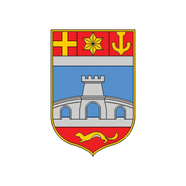
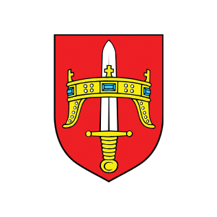
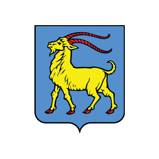
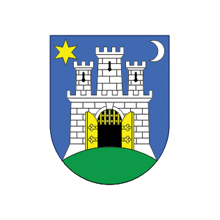

Republika Hrvatska
I. Zagrebačka županija
II. Krapinsko-zagorska županija
III. Sisačko-moslavačka županija
IV. Karlovačka županija
V. Varaždinska županija

VI. Koprivničko-križevačka županija
VII. Bjelovarsko-bilogorska županija
VIII. Primorsko-goranska županija

IX. Ličko-senjska županija
X. Virovitičko-podravska županija
XI. Požeško-slavonska županija
XII. Brodsko-posavska županija
XIII. Zadarska županija
XIV. Osječko-baranjska županija

XV. Šibensko-kninska županija

XVI. Vukovarsko-srijemska županija
XVII. Splitsko-dalmatinska županija
XVIII. Istarska županija

XIX. Dubrovačko-neretvanska županija
XX. Međimurska županija
XXI. Grad Zagreb
